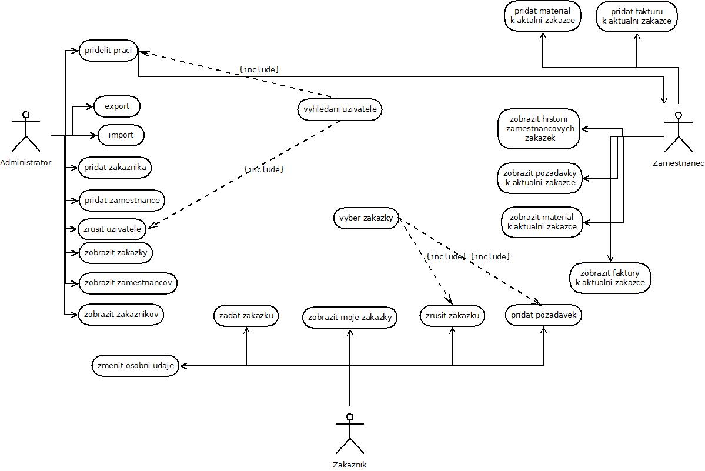

Stavební firma
- Autoøi
- Jan Zbehlik
xzbehl00@stud.fit.vutbr.cz
- Martin Risa
xrisam00@stud.fit.vutbr.cz
- URL aplikace
- http://www.stud.fit.vutbr.cz/~xrisam00
Uzivatele systemu pro testovani
| Login | Heslo | Role |
|---|
| admin | admin | Administrator |
| zak | zak | Zakaznik |
| zam | zam | Zamestnanec |
USE CASE diagram

Implementace
Administrace:
V prùbìhu implementace administraèního rozhraní bylo nazeleno nìkolik drobných chyb v návrhu databáze. Vytvorili jsme novy USE-CASE diagram a poupravili
jsme vztahy v ER-diagramu, z toho duvodu, ze USE-CASE diagram z predmetu IDS, nevyhovoval nasim pozadavkum na implementaci.
Administraci jsme naimplementovali tak, ze zadny zamestnanec, externi zamestnanec ani zakaznik, nemaji moznost registrace. Pokud chteji vyuzivat informacni
system, musi zazadat administratora, ktery je do systemu prida, a prideli jim uzivatelske jmeno a heslo.
Systém je urèený pro malé firmy, takze jsme navrhnuli implementaci tak, ze jeden zamestnanec, muze pracovat zaroven jen na jedne zakazce. Potom co se tato
zakazka dostane ze stavu nevyrizena, do stavu vyrizena, muze administrator pridelit zamestnancum dalsi praci.
Do systemu administrace, se dostaneme z programu ze souboru index.php, kde overujeme, pokud zadane uzivatelske jmeno a heslo souhlasi s databazi, a pokud
ano, kontrolujeme, jestli zadane udaje patri administratorovi, zamestnancum, nebo zakaznikum. Pro zjednoduseni kontroly, jsme zavedli do databazove tabulky
hodnotu JeAdmin, ktera nabyva tri hodnot: 1 - admin , 2 - zakaznik, 3 - zamestnanci a externi zamestnanci. Rozlisujeme zamestnance a externi zamestnance,
ale protoze maji v databazi stejne hodnoty, a mohou v systemu delat tytez veci, muzeme s nimi pracovat v jednom skriptu. Po kontrole prihlasovacich udaju
se provadi odpovidajici php skript, tudiz pro admina - admin.php, zakaznika - zakaznik.php, a zamestnance a externi zamestnance - zamestnanec.php.
- Pridat zakaznika
- Slouzi pro pridani zakaznika do systemu. Jak jiz bylo receno, zadny zakaznik se nemuze zaregistrovat sam, ale musi nejdriv dojit do firmy,
kde na zaklade podani nejakeho pozadavku na nejakou obednavku, dostane od administratora uzivatelske jmeno a heslo, a pote se muze uzivatel jiz
kdykoliv do systemu prihlasit, a provadet urcite akce, popsane dale v dokumentu.
- Pridat zamestnance
- Slouzi pro pridani zamestnance nebo externiho zamestnance do systemu. Zamestnanci take nemaji prava se zaregistrovat sami, do systemu je musi pridat
administrator. V tomto skriptu ma administrator moznost zvolit, jestli zadavane udaje patri k zamestnancovi, nebo externimu zamestnancovi.
- Zrusit uzivatele
- Slouzi pro odstraneni zakazniku a zamestnancu ze systemu a z firemni databaze. V rozeviracim seznamu si vybere login zadaneho uzivatele systemu,
a potvrzovacim tlacitkem ho vymaze. Je osetreno, aby administrator nemohl odstranit sam sebe.
- Prehled zakazek
- Slouzi pro prehled vsech zakazek, ktere firma mela. Zobrazi se informace o ID zakazky, zakaznikovi ktery danou zakazku zadal, jeji popis, a dale jsme
pridali moznost zobrazit stav zakazky. Naimplementovali jsme to tak, ze do databazove tabulky zakazka, jsme zavedli novou polozku Stav, ktery muze nabyvat
jen dvou hodnot: 0 - Nevyrizena, 1 - Jiz hotova. V tabulce se objevi textove, stav vsech zakazek.
- Prehled zamestnancu
- Slouzi pro vyber vsech zamestnancu firmy. Nejprve si administrator musi vybrat, jestli chce zobrazit zamestnance, nebo externi zamestnance. Po vyberu
moznosti se mu v tabulce obevi vsechny informace o danych zamestnancich, a navic v posledni bunce tabulky se zobrazi, jestli dany zamestnanec prave na
necem pracuje, nebo jestli praci nema.
- Prehled zakazniku
- Slouzi pro prehled vsech zakazniku firmy. Krome informaci z databazove tabulky zakaznik, se do tabulky take zobrazi v posledni bunce informace
o vsech zakaznikovych zakazkach, formou rozeviraciho seznamu.
- Pridelit praci
- Slouzi pro prideleni prace jednotlivym zakaznikum. Administrator ma v rozeviracim seznamu loginy vsech zamestnancu, a hned v dalsim rozeviracim
seznamu ma seznam vsech nevyrizenych zakazek. Stiskem tlacitka prideli danemu zamestnancovi praci na dane zakazce.
U¾ivatelské rozhraní - zamestnanec
Uzivatelske rozhranni zamestnance zacina taktez na strance index.php, kde se rozhoduje o tom, kdo je prave prihlaseny. Pokud je prihlaseny zamestnanec,
pokracuje se do skriptu zamestnanec.php , jak je popsano jiz vyse. Hned po prihlaseni, se zamestnancovi na uvodni strance krome menu, zobrazi take to,
jestli prave pracuje na nejake zakazce, a pokud ano, zobrazi se mu na jake, a popis dane zakazky.
- Historie mych zakazek
- Slouzi pro zobrazeni vsech zakazek v historii, na kterych dany zamestnanec pracoval. Udaje se zobrazi v tabulce, ve ktere muze videt ID zakazky, popis
zakazky, a take zakaznika, ktery danou zakazku zadal.
- Pozadavky k aktualni zakazce
- Slouzi pro zobrazeni vsech pozadavku, ktery ma zakaznik k zakazce, na ktere dany zamestnanec prave pracuje. Pokud zamestnanec na zadne zakazce nepracuje,
nebo pokud zakaznik zatim zadny pozadavek nezadal, nezobrazi se mu zadne pozadavky.
- Pridat material k aktualni zakazce
- Slouzi pro pridani materialu k dane zakazce na ktere zamestnanec pracuje. Zamestnanec nema moznost volit k jake zakazce bude material pridavat, ale
automaticky bude do formulare zadavat udaje o materialu, k zakazce na ktere prave pracuje. Tim padem neni moznost, ze by si spletl napriklad ID zakazky,
a pridal material k jine zakazce. Pokud na zadne zakazce nepracuje, tak nema moznost pridat zadny material. Dale je zde kolonka datum splatnosti, ktera
slouzi k tomu, aby pri pridani materialu k dane zakazce, se automaticky pridal i zaznam o fakture, do databazove tabulky faktura. Slouzi to k tomu, aby
zamestnanec nemusel dvakrat zadavat tentyz udaj. Kolonka datum splatnosti, je automaticky vyplnena aktualnim dnem, aby zamestnanec videl, v jakem formatu
datum zadat.
- Pridat fakturu k aktualni zakazce
- Slouzi pro pridani dalsi faktury k aktualni zakazce. Mely by to byt napriklad faktury, tykajici se jinych veci nez materialu, protoze ty faktury se
do systemu ukladaji automaticky pri pridani materialu. Jsou to napriklad faktury ohledne vykonane prace danych zamestnancu, apod.
- Zobraz material k aktualni zakazce
- Slouzi pro zobrazeni materialu k aktualni zakazce. Udaje jsou setøídìny v tabulce, pro pøehlednost. Jsou zde udaje o nazvu materialu, jeho mnozstvi a cene.
Na tuto stranku se skript automaticky presmeruje pri zadani materialu do systemu.
- Zobraz faktury k aktualni zakazce
- Slouzi pro zobrazeni vsech faktur k aktualni zakazce. Udaje jsou opet setrideny do tabulky, pro vetsi prehlednost. V tabulce se nachazi informace o hodnote
dane faktury, a datum jeji splatnosti. Na tuto stranku je opet automaticky presmerovano, po zadani faktury do systemu, aby si mohl uzivatel skontrolovat,
ze to co zadal, je opravdu ulozeno v databazi.
U¾ivatelské rozhraní - zakaznik
Uzivatelske rozhranni zakaznika zacina taktez na strance index.php, kde se rozhoduje o tom, kdo je prave prihlaseny. Pokud je prihlaseny prave zakaznik,
pokracuje se do skriptu zakaznik.php , jak je popsano jiz vyse. Hned po prihlaseni, se zakaznikovi na uvodni strance zobrazi informace o danem zakaznikovi,
a take vypis jeho zakazek a vsech pozadavku, vztahujicich se k nim.
- Zadat zakazku
- Slouzi pro zadani zakazky do informacniho systemu. Zakaznik musi zadat pouze popis zakazky, a ta se ulozi do systemu. Jeji ID, si system hlida sam, tak
aby bylo unikatni, takze neni potreba ho zadavat.
- Zrusit zakazku
- Slouzi pro zruseni dane zakazky. V rozeviracim seznamu si zakaznik muze vybrat zakazku kterou chce zrusit, a potvrzovacim tlacitkem, danou zakazku
ze systemu smaze.
- Zmenit osobni udaje
- Slouzi pro zmenu osobnich udaju o zakaznikovi. Jelikoz se zakaznik do systemu nepridava sam, ale pridava ho tam administrator, vsechny puvodni
udaje v systemu uz ma ulozene. Pokud se ale napriklad prestehuje, a bude potrebovat zmenit udaje o svem bydlisti, ulozenem v databazi stavebni firmy,
muze si tyto informace uz zmenit sam, aniz by musel jit na firmu, a pozadat administratora o zmenu udaju. Dale jsme vyuzili takove rozsireni, ze zakaznikovi
se do jednotlivych kolonek, vypisou udaje ktere jsou o nem ulozeny v databazi firmy, a on muze prepsat zadnou, nebo vsechny udaje.
- Pridat pozadavek
- Slouzi pro pridani pozadavku ke kterekoliv jeho zadanou zakazku. Funguje to tak, ze v rozeviracim seznamu si vybere ze seznamu jeho vsech zakazek, a do
textoveho pole prida svuj dalsi pozadavek k dane zakazce. Potvrzovacim tlacitkem odesle pozadavek do systemu, spojeny s danou zakazkou.
- Moje faktury
- Slouzi pro zobrazeni vsech zakaznikovych faktur, u nasi stavebni firmy. Zakaznik vidi vsechny informace o jeho fakturach.
Instalace
- Pomoci nastroju MyPhpAdmin jsme vytvorili databazi na databazovem serveru, a do slozky WWW jsme nahrali vsechny potrebne skripty.
- Aby nas system fungoval spravne, je potrebny webovy prohlizec, libovolny ze seznamu(Mozilla Firefox, Internet Explorer, Opera, atd.).
System funguje na PHP 4.1 a novejsi.
Známé problémy
Nejsou nam znamy nejake problemy ohledne omezeni naseho informacniho systemu, pozadovana funkcnost je naimplementovana.